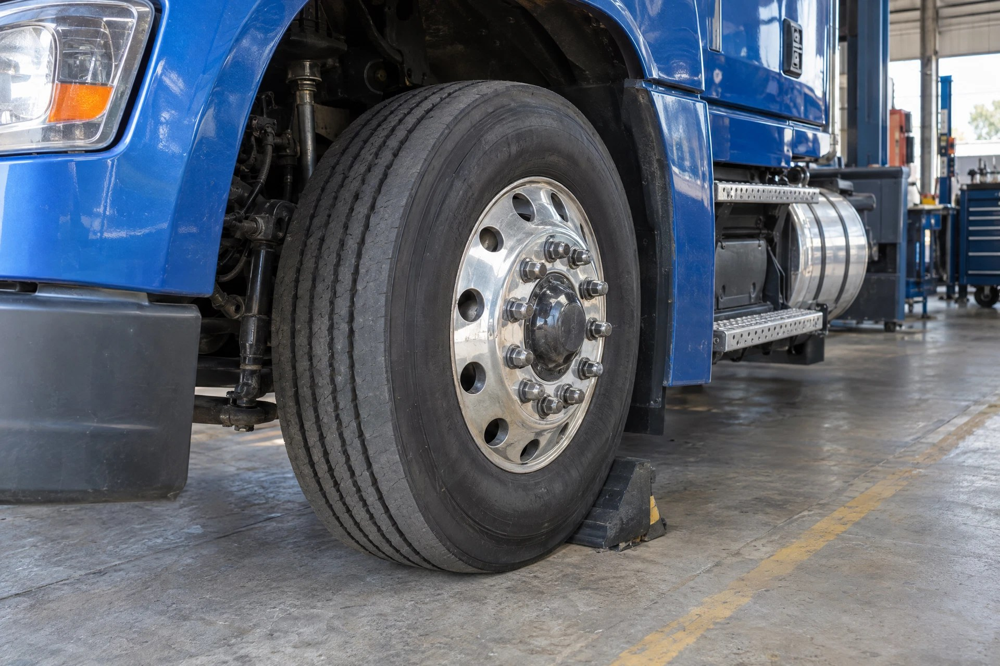

Wheel end: Illustrative system photography—not a location, fitment, or repair-procedure reference.
🛞 WHEEL END DIAGNOSTICS
Wheel ends: how the pieces connect
Support rotating wheels and keep lubricant where it belongs.
- 1
Hub + bearings
Support the wheel and allow it to rotate.
- 2
Lubrication + seals
Protect the bearings and retain the specified lubricant.
- 3
Brake / wheel area
Heat or contamination can involve more than one component.
Leaks, unusual heat and looseness are different warning signs. A hot hub does not automatically mean the bearing is the cause.
Which symptom matches your truck?
Hub / Wheel LeakingOpen the focused symptom guide.Seal Keeps LeakingOpen the focused symptom guide.Hot HubOpen the focused symptom guide.Loose Bearing / HubOpen the focused symptom guide.Growl / RumbleOpen the focused symptom guide.Bearing FailureOpen the focused symptom guide.Brake Drag / Hot WheelOpen the focused symptom guide.
See how all truck systems connectFind manufacturer service information
Heat, leaks, looseness and noise are warnings. Find the source before the wheel end becomes a road hazard.
👀 DON'T KNOW THE PART? SEE THE WHEEL END PARTS VISUAL GUIDE →💧 Hub / Wheel Leaking🔁 Seal Keeps Leaking🔥 Hot Hub↔️ Loose Bearing / Hub🔊 Growl / Rumble⚠️ Bearing Failure🛑 Brake Drag / Hot Wheel🛞 Wheel / Tire Problem
1️⃣ SPINDLE / AXLE
Foundation, bearing and seal surfaces
Foundation, bearing and seal surfaces
↓
2️⃣ INNER BEARING / SEAL
Supports the hub and retains lubricant
Supports the hub and retains lubricant
↓
3️⃣ HUB / LUBRICANT
Correct lubrication and condition protect the rotating assembly
Correct lubrication and condition protect the rotating assembly
↓
4️⃣ OUTER BEARING / RETENTION
Adjustment and retention are safety-critical
Adjustment and retention are safety-critical
↓
5️⃣ BRAKE / WHEEL / TIRE
Heat, contamination, looseness and vibration often become visible here
Heat, contamination, looseness and vibration often become visible here
👇 Follow the warning
💧 LEAK: Trace where lubricant begins. Check seal surfaces, hub movement, lubricant/venting and installation. A new seal does not repair a damaged surface or loose hub.
🔥 HOT HUB: Stop safely if severe. Separate brake heat from bearing/hub heat, compare similar positions, then inspect lubrication and bearing adjustment/condition.
↔️ MOVEMENT: Properly support the vehicle, locate the actual moving joint and measure wheel-bearing end play/adjustment. On steer axles, separate bearing movement from kingpin movement.
🔊 GROWL / RUMBLE: Record road speed, turning, braking and load. Tires, brakes, bearings, differential and driveline can transmit similar noise.
⚠️ FAILED BEARING: Preserve evidence. Inspect lubrication, adjustment/retention, damage pattern, spindle and hub before replacing parts so the root cause is not rebuilt into the wheel end.
🧠 Wheel-end firewall
1️⃣ Where is the heat, leak, noise or movement actually originating?
2️⃣ Is the brake contributing? Brake drag can mimic or create wheel-end heat.
3️⃣ Is lubrication correct and contained? Verify level/condition and leakage.
4️⃣ Is the hub mechanically controlled? Measure adjustment/end play and inspect retention.
5️⃣ Are spindle, hub, bearing and seal surfaces reusable? Compare to manufacturer requirements.
🧩 Related systems
SECURE VEHICLE → LOCATE HEAT / LEAK / MOVEMENT / NOISE → BRAKE VS HUB → LUBRICATION → MEASURE → INSPECT COMPONENTS → ROOT CAUSE → VERIFY.
⚠️ A loose, overheated, leaking or damaged wheel end can become a serious road hazard. Follow the exact wheel-end/axle manufacturer procedure and specifications. Do not operate the vehicle when wheel-end safety is in question.